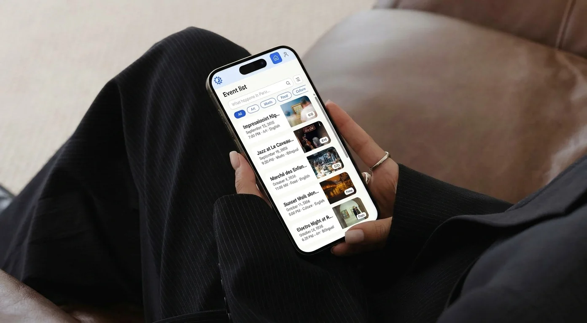
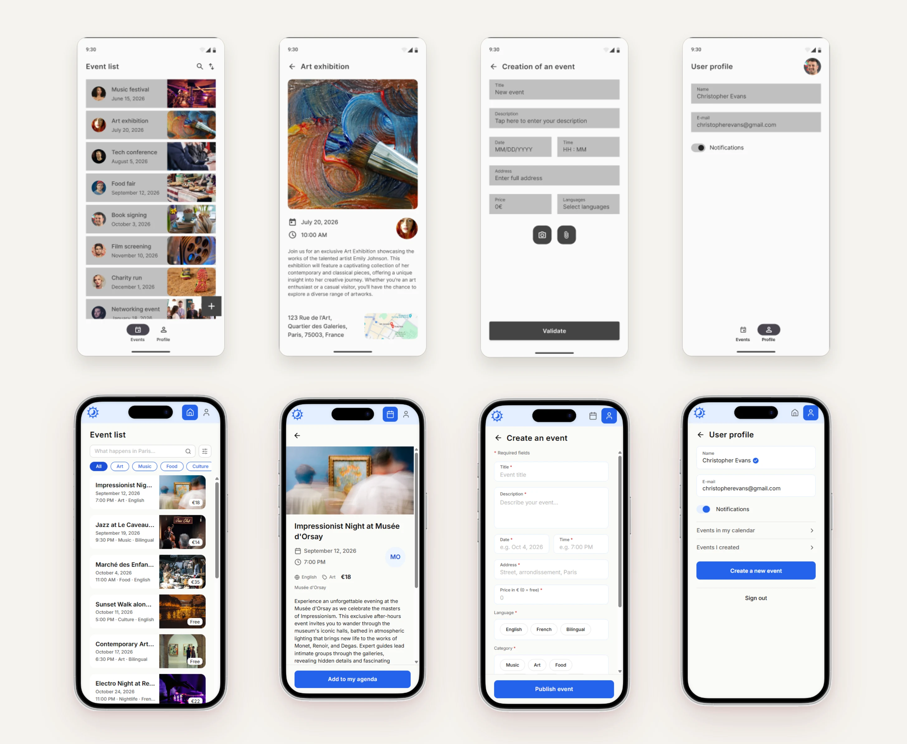
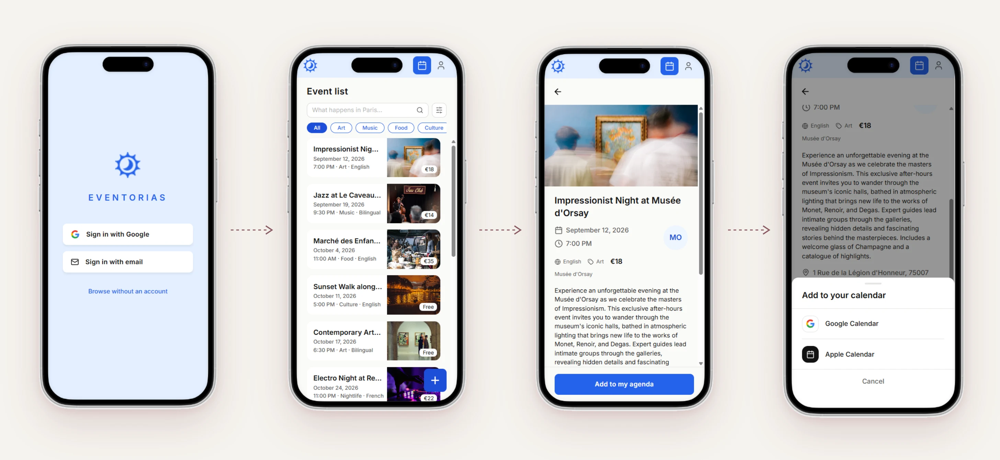
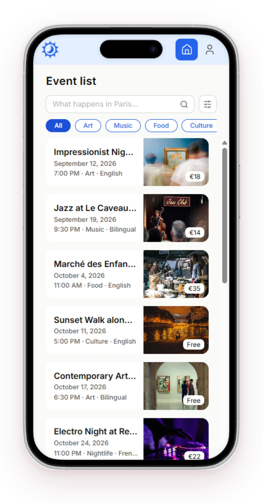
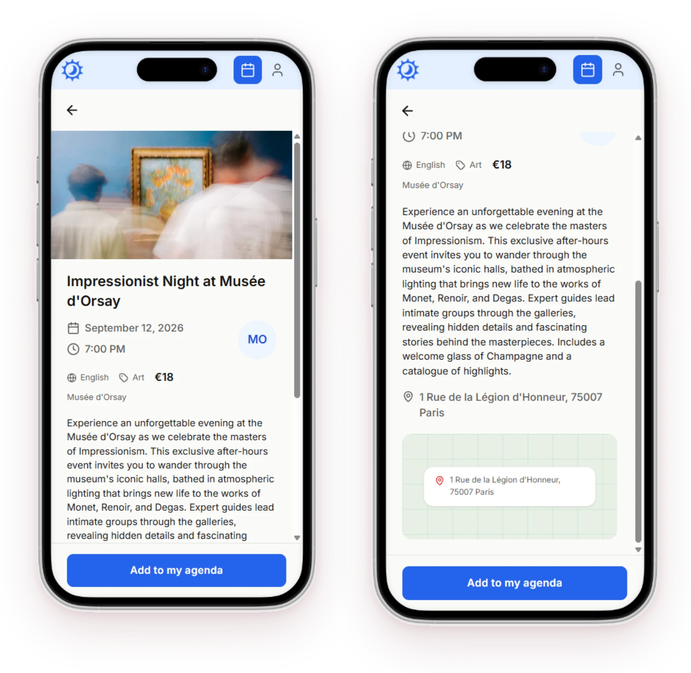
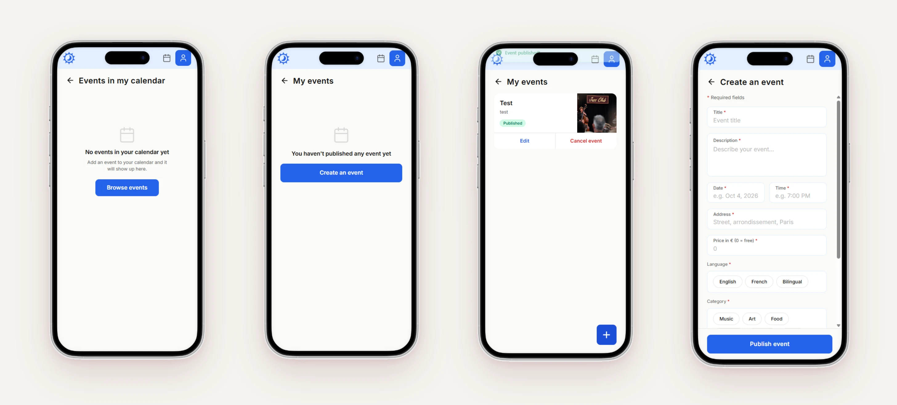
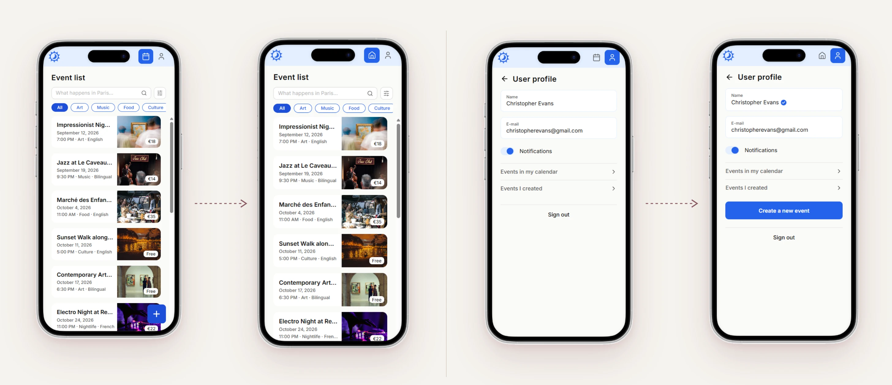

Eventorias
No-code prototyping and handoff to developers
A no-code prototype designed to help English-speaking tourists find an event in Paris, which was tested and then documented for developers.

Context and challenge
Eventorias is a mobile app for English-speaking tourists staying a few days in Paris. They decide quickly, often in the morning for the evening, and the information they need is scattered across websites, social networks and street posters, rarely in English. Nothing tells them upfront whether an event will be accessible to them.
I joined once the brief, the wireframes and the backlog were set. My mission: turn them into a no-code prototype, test it with real users, then hand it over to the in-house developers.
Help a tourist discover, understand and save an event in a few taps, and give developers everything they need to build it without guessing.
Discover, understand, save. The MVP scope fits in three verbs, with an explicit list of what is out.
Two opposite profiles, four tasks, about 15 minutes each. One finding was blocking, and it changed the design.
A five-minute guided video and a six-block documentation, with seven screens specified in full.
Tourists decide fast, and need the language upfront
Before touching the wireframes, I did my watch: eight themes tied to the project (event journeys, mobile patterns, UX states, accessibility) and ten broader ones for the craft. Four apps were studied in detail, and each one changed something in the prototype.
- GetYourGuide ranks language with price in its filters, so language became a first-level filter.
- Klook opens filters in a bottom sheet over the list, a pattern I kept as is.
- Airbnb confirms the calendar addition and keeps the host visible, hence our confirmation toast and organizer avatar.
- Time Out organizes filters as what, where, when, a grid I used to structure ours.
Then I turned the given wireframes into a prototype, adding what they were missing.

Wireframes from the brief vs. the prototype. Added: search and category chips, the missing primary action on the details page, required-field markers, and profile shortcuts.
One screen to decide, one action to save
The main journey fits in four steps: browse the list (search, category, then date, price and language, all combinable), open an event, save it to a calendar, and, for organizers, publish. Browsing never requires an account: sign-in only appears at the moment of saving, and brings you back to the event you were reading.
There are three roles: a visitor who can read everything, a signed-in user who can save and manage events, and a verified organizer, the only one allowed to publish.
One rule drove the details page: date, time, language, category and price must be visible without scrolling. It is a constraint, not a layout preference.

Main journey, tested version. “Browse without an account” keeps discovery open.


Prototyping the moments where people hesitate
I chose a no-code prototype over static mockups because I wanted to watch people navigate, not comment on images. Built in Figma Make, it opens on a phone with no install, and it has real states: an empty list, form errors, bottom sheets. These are the moments where people hesitate. Twelve iterations led to the tested version, and two more followed.

States and business rules. An empty list always offers a way out, and never uses red: it is not an error.
- Navigation
- Information hierarchy
- Understanding of an event page
- Empty states
- Real data: 12 hard-coded events, no API
- Sign-in: simulated with a demo account
- Calendar export: writes nothing anywhere
- Loading and network errors: specified, but not observable
Loading and network-error states are specified in the documentation but cannot be checked in the prototype. They still have to be built.
I made the button more visible, then dropped the idea
Two participants with opposite habits: one decides fast and navigates on instinct (19, student), the other reads everything and compares (30, data analyst). Four tasks, about 15 minutes each, by video call. They thought aloud, and I observed without helping, even when it got stuck. Especially then.
Nobody found the create button. It was on Home, bottom right. Both participants went looking in their profile.
Getting back to Home took several back steps, and the calendar icon was read as “my events”.
A form filled with random data was published without any check, and the participant asked whether anything was controlled. He was right.
The decision
My first reflex was to make the button more visible. I designed that version, then dropped it: it fixed visibility, while the real problem was where people looked. Making the button louder meant asking users to adapt to my interface.
So I moved the function to where they already went. Creation now lives in the profile as a full-width button, a Home icon replaces the calendar icon, and only verified organizers can publish, which also answers the missing control on content.

Before and after the tests. The “+” was there; neither participant saw it.
Two participants is not statistics, it is friction detection. Both got stuck at the same place, which was enough to decide.
A handoff developers can interrogate
The handoff comes in two forms. A five-minute video that reads the documentation with you: where to enter, what is easy to miss. And the documentation itself, in six blocks.
The sixth block is the one developers will open most: seven screens, each with its content, actions, business rules, states and edge cases. Every screen carries a stable ID (EVT-001, ME-001…) to be reused as is in the code, so that we speak the same language when we debug together.
Four points of vigilance, by severity
Access control. Hiding the create button is not enough: the screen must be unreachable for a non-verified account, checked server-side.
Form validation. Today it only checks that a value exists. Format and maximum lengths are needed.
Loading and network errors. They must exist even though the prototype cannot show them.
English only. The interface is in English without exception, error messages included. The exact texts are in the documentation.
Left open on purpose: how to become a verified organizer is neither designed nor specified. It is out of the MVP, so I flagged it instead of inventing it.
What I take away
Decisions come from observation, not from taste.
The “out” list matters as much as the “in” list.
If something is not decided in the documentation, raise it, do not guess it.